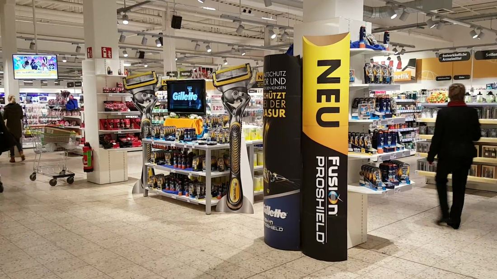
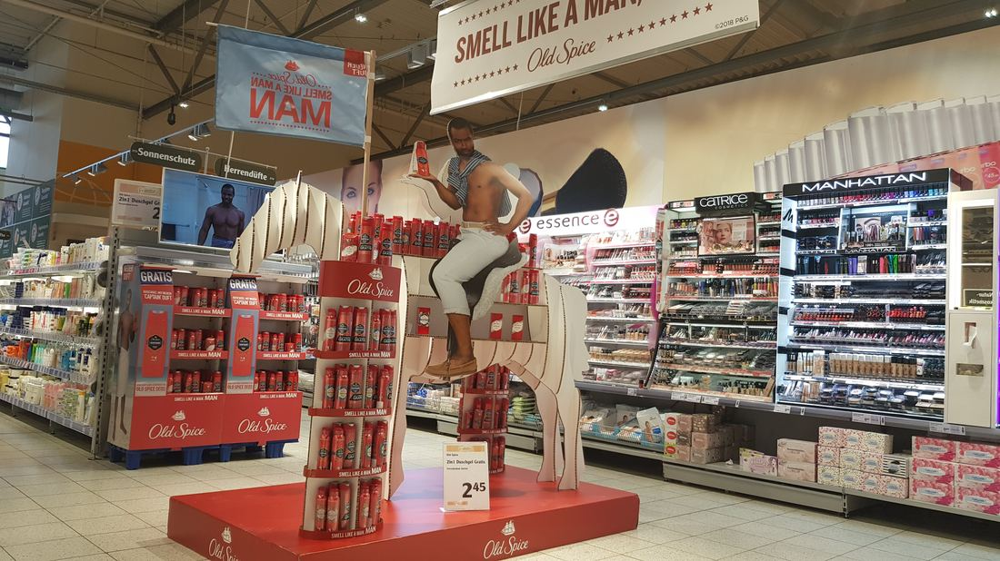
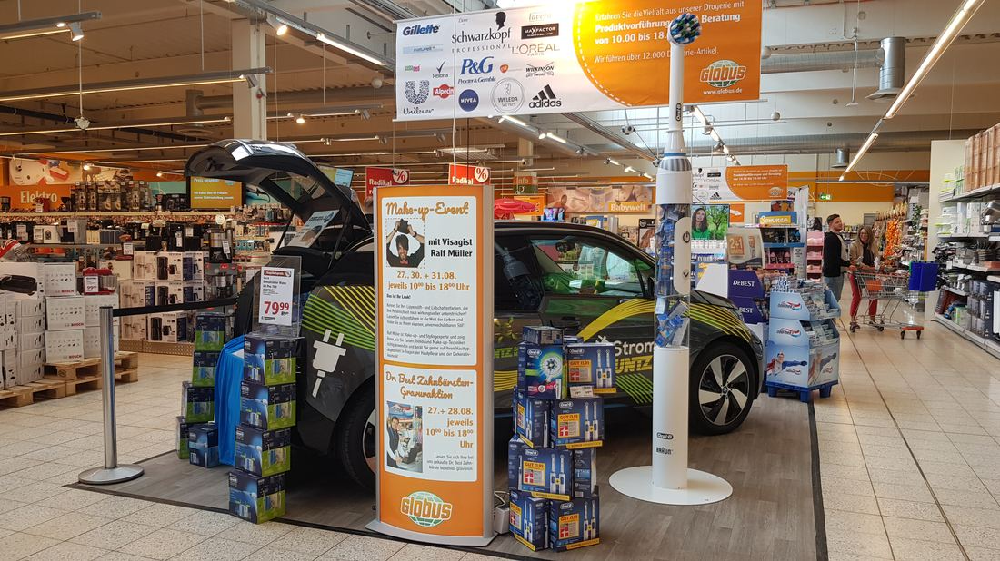
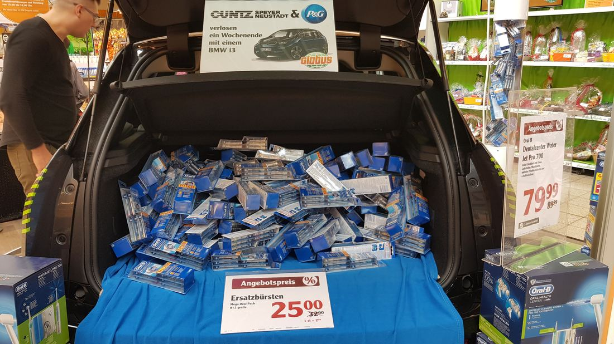
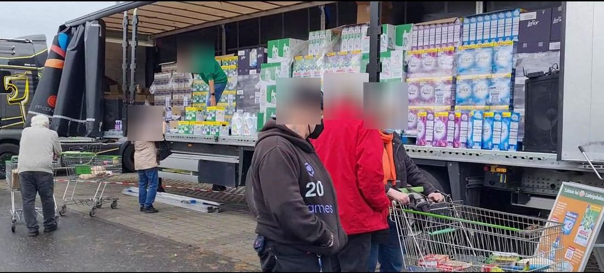

Erfahrung im echten Vertrieb.
Menschen lesen
Mikro-Signale, Körpersprache, Dynamiken spüren.
Souveränität in Krisen
Ruhig bleiben bei Druck und Konflikten.
Beziehungsaufbau
Echtes Vertrauen und emotionale Bindung schaffen.
Storytelling
Nutzen anschaulich vermitteln.
Komplexe Verhandlungen
Preisgespräche und schwierige Deals souverän führen.
Netzwerkpflege
Langfristige Beziehungen aktiv knüpfen.
Einwände antizipieren
Einwände frühzeitig erkennen und entkräften.
Strategisches Denken
Muster und Marktbewegungen erkennen.
Kundenpsychologie
Emotionale und soziale Entscheidungsprozesse verstehen.
Langfristige Kundenbindung
Kunden über Jahre hinweg betreuen.
Mein Pitch in 2 Minuten
Lebenslauf in Kürze
25+ Jahre Erfahrung im FMCG-Vertrieb, im Aufbau starker Handelspartnerschaften und in der Zusammenarbeit mit leistungsstarken Verkaufsteams im Handel. Mein Schwerpunkt: Potenziale auf der Fläche sichtbar und messbar machen. Diplom-Betriebswirt (FH), International Business, FH Darmstadt.
Stationen
Field Account Manager (Mannheim · Heidelberg · Kaiserslautern · Saarland) · Category Management · Market Planning · 23 Jahre bei Procter & Gamble, davor Intersnack und Wolf Bergstrasse, seither B2B-Vertrieb und digitale Weiterqualifizierung
Meine besten Erfolge
Top-Platzierung im Ranking
Herausforderung: hoher Wettbewerbsdruck im Waschmittelsegment. Lösung: konsequente POS-Exzellenz und enge Handelsbetreuung. Ergebnis: Top-10-Platzierung deutschlandweit.
Nr. 1 in Deutschland
Herausforderung: geringe Sichtbarkeit einer Produktneueinführung. Lösung: bundesweite Zweitplatzierungs-Aktion. Ergebnis: Platz 1 in Deutschland mit 120 Displays.
Aktionsziel weit übertroffen
Herausforderung: ambitionierte Vorgabe für eine LKW-Aktion. Lösung: gezielte, priorisierte Handelsansprache. Ergebnis: 250 % Zielerreichung.
Teamleistung ausgezeichnet
Herausforderung: bereichsübergreifende Zusammenarbeit stärken. Lösung: aktive Mitgestaltung einer Team-Initiative. Ergebnis: „Mission Possible – We Can Award" gewonnen.
POS-Aufbauten, die Lust machen
Reale POS-Aktionen aus über 25 Jahren FMCG-Vertrieb – von Zweitplatzierungen bis zu großflächigen Themenwelten.








Wie ich arbeite: präsent, strukturiert, umsetzungsstark
Mein Plan für die ersten 100 Tage
Präsent im Markt. Klar in der Analyse. Konsequent in der Umsetzung.
- Alle A-Kunden in Mannheim, Heidelberg und Umgebung besuchen
- Distribution, Verfügbarkeit, Regalqualität und Zweitplatzierungen analysieren
- Wettbewerber, Preise, Aktionen und Sortimentsentwicklung systematisch erfassen
- Interne Ansprechpartner, Abläufe und Entscheidungswege kennenlernen
- Drei bis fünf geeignete Zweitplatzierungen realisieren und vereinbaren
- Regal-Checks mit Filialleitungen und klaren Folgeterminen durchführen
- Eine strukturierte Feedback-Runde mit Marktverantwortlichen durchführen
- Bezirksziele für Umsatz, Distribution, Regalanteil und Zweitplatzierungen optimieren
- Besuchs- und Routenplanung nach Potenzial, Handlungsbedarf und Wirtschaftlichkeit optimieren
- Ein kompaktes Reporting mit den wichtigsten Kennzahlen und Verantwortlichkeiten etablieren
- Erfahrungen aus den ersten 100 Tagen in einen belastbaren Maßnahmenplan überführen
Warum Danone?
Meine Vertriebslaufbahn hat mit Pom-Bär und Chio Chips im Lebensmittelhandel begonnen, bei Procter & Gamble kamen Pringles, Waschmittel und Körperpflege dazu. Bei Danone kommt beides zusammen: Marken, die der Handel kennt und die Verbraucher gezielt suchen – und ein Sortiment, bei dem Verfügbarkeit, Regalqualität und Präsenz am POS jeden Tag zählen.
Dazu kommt das Gebiet: Mannheim und Heidelberg kenne ich aus vielen Jahren im eigenen Bezirk – die Märkte, die Händler und die Wege dazwischen. Genau dort möchte ich wieder tun, was mir im Vertrieb am meisten liegt: raus zum Kunden, ans Regal und einen Bezirk eigenverantwortlich weiterentwickeln.
Lust auf ein Gespräch?
Ich freue mich darauf, Ihre nächste Erfolgsgeschichte im Handel mitzugestalten.
23 Jahre Procter & Gamble, davor Intersnack und Wolf Bergstrasse.